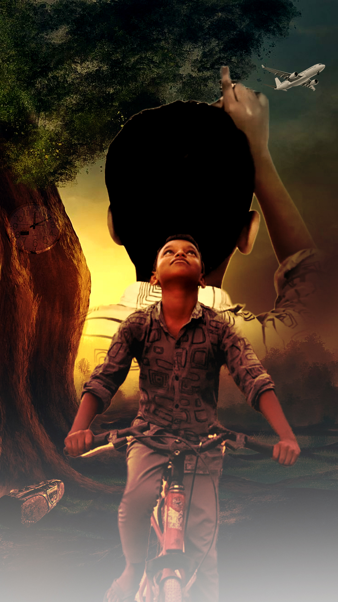
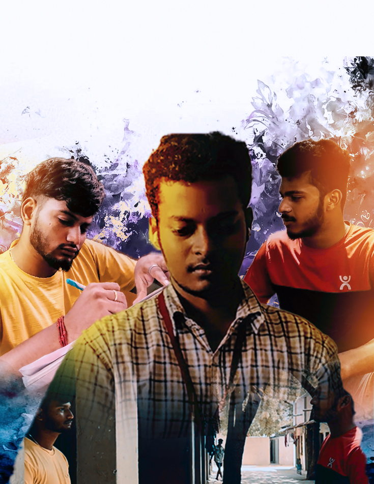
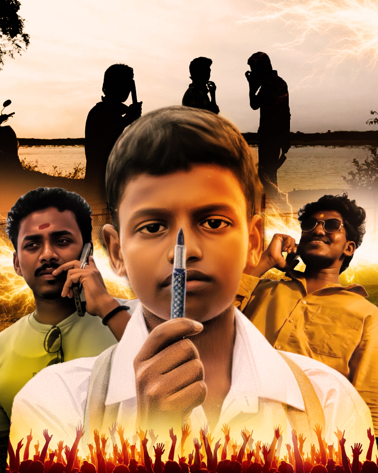
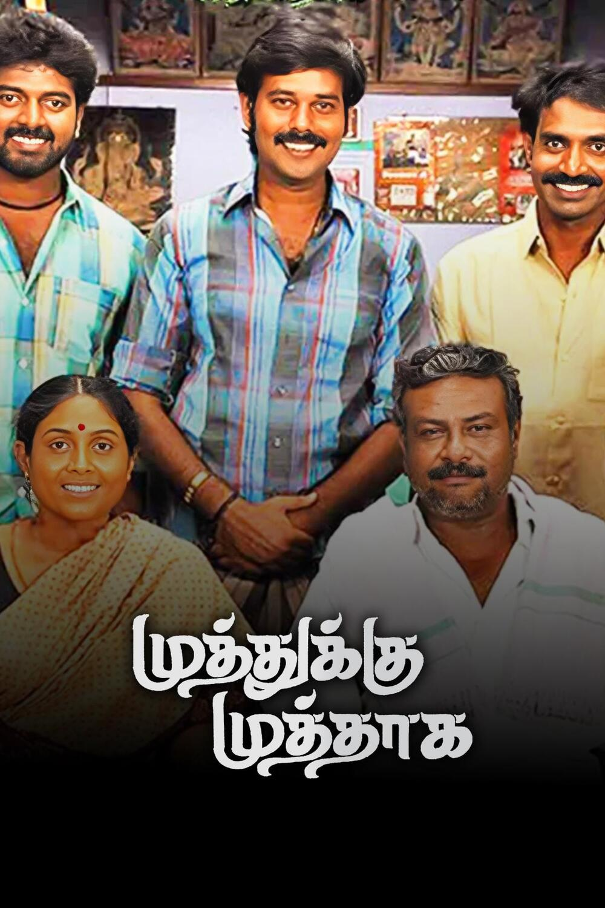

Loop Thriller Drive ReelORU VANNOLIYIN KANAVU
A mind-bending loop thriller unraveling how choices echo across fragmented timelines. Built with tight claustrophobic framing and pulsating sound design.
WRITER • DIRECTOR: GUNA M
DIRECTORIAL ARCHIVE
A Film by Gunanidhi M
Crafting high-impact narratives that delve deep into raw human emotions, psychological tension, and bold visual grammar. From script breakdown to the cutting room, breathing life into cinema.
Bridging emotional authenticity with uncompromising cinematic framing.
DIRECTOR • STORYTELLER
“Cinema is not merely what is displayed on the screen—it is the raw emotion that stays with the viewer long after the lights turn back on.”
I am an aspiring film director driven by an obsessive commitment to cinematic narrative. My approach revolves around visceral human struggles, authentic actor performances, and rigorous visual composition.
Filmmaking for me is an all-encompassing craft: from shaping the philosophical core of a screenplay to setting up lighting ratios on set, operating the camera as a DOP, and discovering the soul of the film at the editing timeline.
A showcase of short films exploring time loops, human grit, and dramatic tensions.

Loop Thriller Drive ReelA mind-bending loop thriller unraveling how choices echo across fragmented timelines. Built with tight claustrophobic framing and pulsating sound design.

Motivational Drama Drive Reel"The pain of thorns is never the end of life." An intimate exploration of emotional survival, human resilience, and triumphing over personal abyss.

Narrative Drama YouTube PremiereEvery dimension of storytelling mastered to translate raw ideas into screen magic.
Sculpting pacing, dramatic pauses, match cuts, and montage rhythms to amplify emotional momentum.
Anamorphic framing, chiaroscuro lighting, camera angles, and movement that mirror character states.
Character psychology, three-act and non-linear arcs, thematic depth, and subtext-rich natural dialogue.
Creating striking film identity, title typography, visual iconography, and high-impact festival posters.
Masterpieces that continually ignite my storytelling fire and artistic philosophy.

Open for feature discussions, short film collaborations, cinematography & editing projects.
Whether you need a director to helm your project or a creative eye on the edit table, let's talk.
Start Collaboration